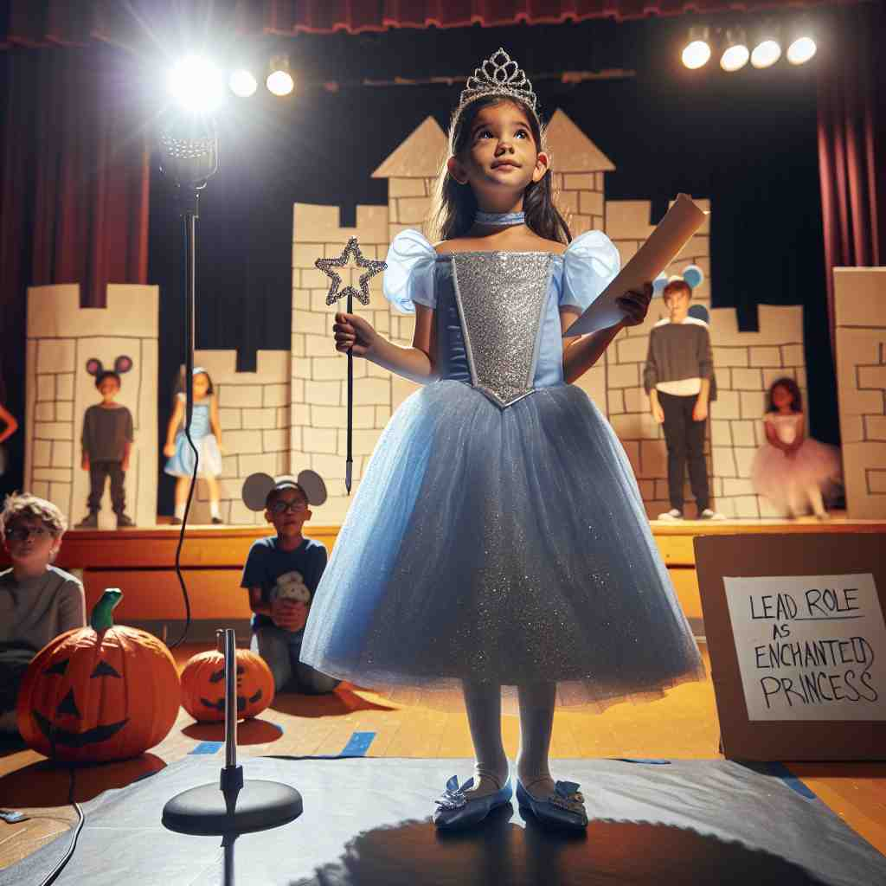

💬 She has the lead role in the play as an enchanted princess.
💬 The actor will play a role in the historical drama.

💬 The actor loves to play a role in the theater.
🔈 [rəʊl]
🗝️ n. a part or character played by an actor
🖼️ 在一个灯光璀璨的舞台上，演员正装扮成一位国王，他穿着华丽的长袍，手持权杖，威风凛凛地朗诵台词。观众沉浸在他的表演中，这正是他在剧中扮演的角色——一位统治者。
🔍 想象一个演员在舞台上扮演不同的角色。这个核心概念可以帮助你理解'role'在各种场景中的应用。无论是在组织中的职责，在某个情况下的作用，还是社会中期望的行为模式，都可以类比为一个人在'扮演'不同的角色。这种联想可以帮助你更好地记忆和理解'role'的多重含义。
💬 She has the lead role in the play as an enchanted princess.
💬 The actor will play a role in the historical drama.
💬 The actor loves to play a role in the theater.
🌳 该单词是由法语词 'rôle' 演变而来，指的是一个人在某种情境下应承担的职责或扮演的角色。
💡 可以联想成戏剧中的 '角色'，每个人在生活或工作中都有不同的 '角色' 要扮演。想象自己在舞台上表演，可以更容易记住 'role' 的含义。
🗝️ n. the function or position that someone has in a situation, organization, society, or relationship
🖼️ 在一个繁忙的办公室中，小李坐在桌前，认真地审核文件。他是公司中负责审批流程的重要角色，确保所有项目按计划进行。员工们都依赖他的决策和指导。
💬 As a teacher, her role is to educate and inspire students.
❓ 从演员扮演的"角色"延伸到现实生活中的"职责"或"作用"
🗝️ n. the way in which someone or something is involved in or influences an activity or situation
🖼️ 在一个科学实验室中，研究员正在观测显微镜下的样本。她的研究成果在推动行业科技进步中扮演着关键角色，影响着整个领域的发展方向。
💬 Exercise plays a crucial role in maintaining good health.
❓ 类比演员在剧中的影响，延伸到事物在某情况下的"作用"或"影响"
🗝️ n. typical or expected behavior in a particular situation
🖼️ 一个温馨的家庭聚会中，父亲正在烹饪佳肴，母亲在布置餐桌，孩子们在一旁玩耍。这种场合下，每个人都有其期望的角色，营造出和谐的氛围。
💬 It's not a woman's role to stay at home and look after children.
❓ 从戏剧中预定的"角色"延伸到社会中预期的"行为模式"